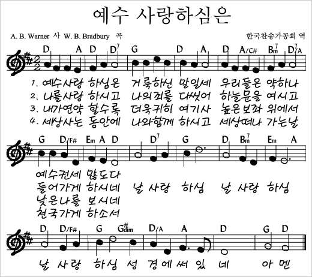

하나님이 지어 입히셨습니다
2026년 9월 6일 주일설교 "하나님이 지어 입히셨습니다"(창세기 3:20-21)와 같은 메시지를, 아이들도 이해하기 쉬운 삭개오 이야기로 함께 나누는 가정예배입니다.
누가복음 19:1-10 · 삭개오
1. 묵상기도
다같이잠시 눈을 감고 마음을 가다듬습니다. 이번 한 주 잘 보이려 애썼던 일, 감추고 싶었던 일들을 내려놓고, 지금 이 시간 하나님과 가족 앞에 있는 모습 그대로 나아갑니다.
2. 신앙고백
다같이나는 전능하신 아버지 하나님, 천지의 창조주를 믿습니다. 나는 그의 유일하신 아들, 우리 주 예수 그리스도를 믿습니다. 그는 성령으로 잉태되어 동정녀 마리아에게서 나시고, 본디오 빌라도에게 고난을 받아 십자가에 못 박혀 죽으시고, 장사된 지 사흘 만에 죽은 자 가운데서 다시 살아나셨으며, 하늘에 오르시어 전능하신 아버지 하나님 우편에 앉아 계시다가, 거기로부터 살아 있는 자와 죽은 자를 심판하러 오십니다. 나는 성령을 믿으며, 거룩한 공교회와 성도의 교제와 죄를 용서받는 것과 몸의 부활과 영생을 믿습니다. 아멘.
2004년 한국기독교교회협의회·한국기독교총연합회·대한성서공회 공동 새번역
3. 찬송
다같이예수 사랑하심은 — 이번 주일예배 때 불렀던 "괴로울 때 주님의 얼굴 보라"는 가락과 가사가 어린 자녀에게는 다소 어려워, 온 가족이 함께 부르기 쉬운 이 곡으로 바꾸어 드립니다. "날 사랑하심 성경에 써 있네" — 어린 자녀도 익히 아는 찬양이니 후렴만이라도 손잡고 함께 불러 보세요.

유튜브에서 듣기4. 대표기도
담당자미리 정한 가족이 아래 기도문을 그대로 읽거나, 참고하여 자신의 말로 기도합니다.
사랑하는 하나님 아버지, 오늘도 이렇게 온 가족이 한자리에 모여 주님께 예배드릴 수 있어 감사합니다. 우리가 잘 보이려고 애쓰기 전에, 우리가 준비를 다 마치기도 전에 먼저 다가와 안아 주시는 그 사랑을 기억하게 하여 주시옵소서. 부끄러운 모습을 감추려고 서로에게, 또 주님께 숨기고 있는 것이 있다면 오늘 이 시간 정직하게 내려놓게 하시고, 우리 가정이 서로의 부족함을 가리기보다 있는 모습 그대로 받아 주는 가정 되게 하여 주시옵소서. 예수님의 이름으로 기도드립니다. 아멘.
5. 성경봉독
다같이누가복음 19:1-10 (개역개정)
1예수께서 여리고로 들어 지나가시더라
2삭개오라 이름하는 자가 있으니 세리장이요 부자라
3그가 예수께서 어떠한 사람인가 하여 보고자 하되 키가 작고 사람이 많아 할 수 없어
4앞으로 달려가 볼 수 있는 뽕나무에 올라가니 이는 예수께서 그리로 지나가시게 됨이러라
5예수께서 그 곳에 이르사 우러러 보시고 이르시되 삭개오야 속히 내려오라 오늘 내가 네 집에 유하여야 하겠다 하시니
6급히 내려와 즐거워하며 영접하거늘
7뭇 사람이 보고 수군거려 이르되 저가 죄인의 집에 유하러 들어갔도다 하더라
8삭개오가 서서 주께 여짜오되 주여 보시옵소서 내 소유의 절반을 가난한 자들에게 주겠사오며 만일 누구의 것을 토색한 일이 있으면 사 배나 갚겠나이다
9예수께서 이르시되 오늘 구원이 이 집에 이르렀으니 이 사람도 아브라함의 자손임이로다
10인자가 온 것은 잃어버린 자를 찾아 구원하려 함이니라
6. 말씀나눔
인도자여러분은 누군가에게 잘 보이려고 미리 준비를 다 마친 다음에야 만나고 싶었던 적이 있나요? 오늘은 준비할 틈도 없이, 있는 모습 그대로 예수님을 만난 한 사람의 이야기입니다.
삭개오가 살던 시대에 유대 나라는 로마의 다스림을 받고 있었습니다. 세리는 로마를 위해 같은 유대 사람들에게서 세금을 걷는 사람이었는데, 정해진 것보다 더 많이 걷어 자기 주머니를 채우는 일이 흔했습니다. 삭개오는 그런 세리들을 거느리는 세리장이었고, 그렇게 큰 부자가 되어 있었습니다. 그러니 동네 사람들에게 삭개오는 "내 돈을 빼앗아 간 사람"이었습니다. 다들 그를 미워했고, 삭개오도 그것을 알기에 사람들 앞에 떳떳하게 나서지 못했습니다.
그런데 예수님에 대한 소문이 삭개오의 귀에도 들려왔습니다. 다른 선생님들과 달리, 예수님은 세리와 죄인이라 불리는 사람들과도 스스럼없이 밥을 먹고 이야기를 나누신다는 소문이었습니다. 사람들은 그런 예수님을 손가락질했지만, 삭개오에게는 그 소문이 예수님을 꼭 한번 보고 싶게 만들었습니다.
예수님이 여리고 마을을 지나가신다는 소식에 삭개오도 거리로 나갔습니다. 하지만 사람들 틈에서 예수님을 보기란 쉽지 않았습니다. 삭개오는 키가 작았고, 몰려든 사람도 많았거든요. 그래서 앞으로 달려가 길가에 서 있던 뽕나무 위로 올라갔습니다. 뽕나무는 가지가 낮고 넓게 퍼져 있어 오르기 좋은 나무였습니다. 다 큰 어른이 나무 위로 올라가는 건 부끄러운 일이었지만, 삭개오에게는 예수님을 보는 것이 그 부끄러움보다 훨씬 중요했습니다.
예수님이 그 나무 아래 이르셨을 때, 놀라운 일이 벌어졌습니다. 예수님이 고개를 들어 삭개오를 똑바로 보시고 이름을 부르셨습니다. "삭개오야, 어서 내려오너라. 오늘 내가 네 집에 머물러야겠다." 삭개오는 아직 아무 말도 하지 않은 채였습니다. "제가 잘못했습니다"라고 사과한 적도, 앞으로 잘 살겠다고 약속한 적도 없었습니다. 그런데 예수님이 먼저 그의 이름을 부르시고, 먼저 그의 집에 가겠다고 하신 것입니다.
사람들은 수군거렸습니다. "왜 하필 저런 죄인의 집에 들어가시는 거지?" 하지만 삭개오는 너무 기뻐서 얼른 나무에서 내려와 예수님을 자기 집으로 모셨습니다. 그리고 그 자리에서 스스로 이렇게 말했습니다. "제 재산의 절반을 가난한 사람들에게 나누어 주겠습니다. 남의 것을 속여 빼앗은 일이 있다면 네 배로 갚겠습니다."
삭개오가 먼저 착해진 다음에 예수님이 찾아오신 게 아니었습니다. 예수님이 먼저 그를 부르시고 그의 집으로 향하신 다음에야, 삭개오가 변하기 시작했습니다.
이것은 지난 주일에 나누었던 말씀과 꼭 닮았습니다. 아담과 하와가 부끄러워 숨어 있을 때, 하나님은 반성문을 받지 않으신 채 먼저 가죽옷을 지어 입혀 주셨습니다. 삭개오가 나무에서 내려오기도 전에 예수님이 이미 그의 집에 가겠다 말씀하신 것처럼, 하나님은 우리가 잘 보일 준비를 마치기를 기다리지 않으시고 지금 이 모습 그대로 찾아오시는 분입니다.
그러니 우리도 부끄러운 모습을 굳이 감추거나, 잘 보이도록 다 고친 다음에야 하나님께 나아가려 하지 않아도 됩니다. 하나님은 이미 먼저 우리를 향해 다가와 계십니다.
7. 함께 나누는 이야기
다같이- 어린이와 함께 삭개오는 사람들이 싫어하는 사람이었는데도 예수님이 먼저 이름을 불러 주셨어요. 나도 누군가에게 먼저 다가가 이름을 불러 줄 수 있을까요?
- 함께 생각해보기 나는 "잘 준비된 다음에야" 하나님께 나아갈 수 있다고 생각한 적이 있나요? 오늘 말씀은 그 생각에 대해 뭐라고 말해 주나요?
- 우리 가정을 위해 우리 가족은 부족한 모습을 보인 사람에게 먼저 무엇을 하는 가정인가요? 잘 보일 때까지 기다리게 하나요, 아니면 지금 모습 그대로 다가가 주나요?
8. 합심기도
다같이가족이 돌아가며 짧게 한 가지씩 기도 제목을 나누고, 서로를 위해 소리 내어 기도합니다. 나이가 어린 자녀도 짧은 한마디로 참여할 수 있습니다.
9. 주기도문
다같이하늘에 계신 우리 아버지, 아버지의 이름을 거룩하게 하시며 아버지의 나라가 오게 하시며, 아버지의 뜻이 하늘에서와 같이 땅에서도 이루어지게 하소서. 오늘 우리에게 일용할 양식을 주시고, 우리가 우리에게 잘못한 사람을 용서하여 준 것같이 우리 죄를 용서하여 주시고, 우리를 시험에 빠지지 않게 하시고 악에서 구하소서. 나라와 권능과 영광이 영원히 아버지의 것입니다. 아멘.
2004년 한국기독교교회협의회·한국기독교총연합회·대한성서공회 공동 새번역